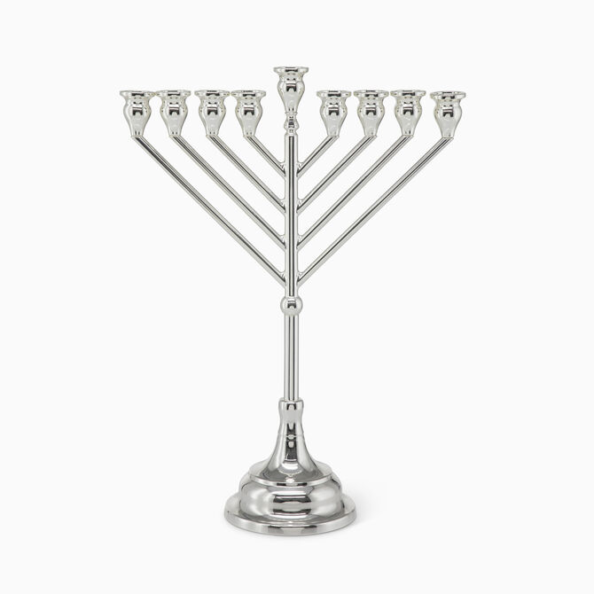

Timeless Judaica from Hazorfim
Hazorfim is Israel’s most prestigious silver Judaica brand, handcrafting elegant menorahs, kiddush cups, and shabbat sets for over 70 years. Known for its artistic craftsmanship and rich Jewish symbolism, Hazorfim brings heritage to life in silver form.
Visit Hazorfim →